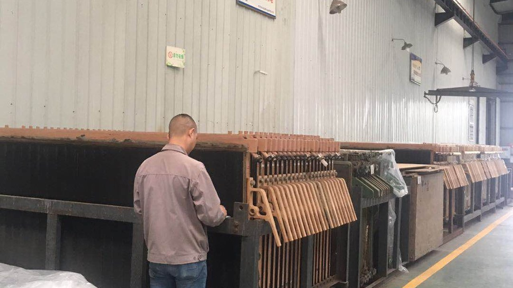
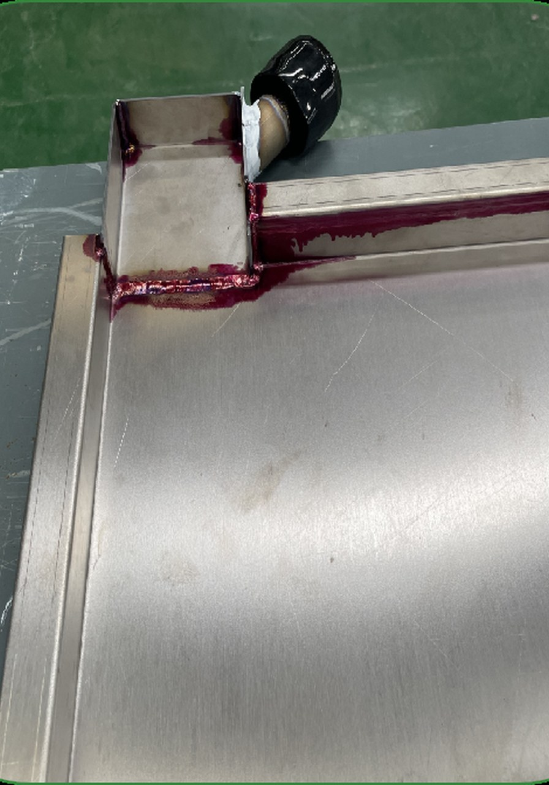

Pemeriksaan sel
Kerosakan yang kelihatan, permukaan pengedap, keadaan rangka dan kawasan sambungan diperiksa.

Perkhidmatan penyelenggaraan elektroliser membran
Skop perkhidmatan
Kerosakan yang kelihatan, permukaan pengedap, keadaan rangka dan kawasan sambungan diperiksa.
Kerja tertumpu pada tempat duduk gasket, permukaan sentuhan rangka dan kawasan mampatan.
Kemungkinan naik taraf dinilai mengikut struktur, keadaan plat dan sasaran operasi.
Foto, lukisan, kuantiti, platform, medium, suhu, tekanan dan sejarah operasi diperlukan.
Foto pembaikan dan naik taraf




Proses penilaian
Semakan foto, lukisan dan maklumat platform.
Pengesahan skop, bahan dan titik kawalan.
Pelaksanaan kerja diluluskan dan pemeriksaan pengedapan.
Pemeriksaan rupa, dimensi penting dan pembungkusan.
Minta penilaian pembaikan